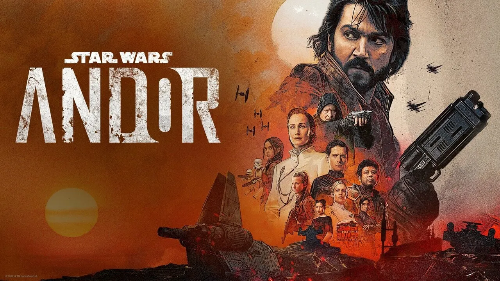
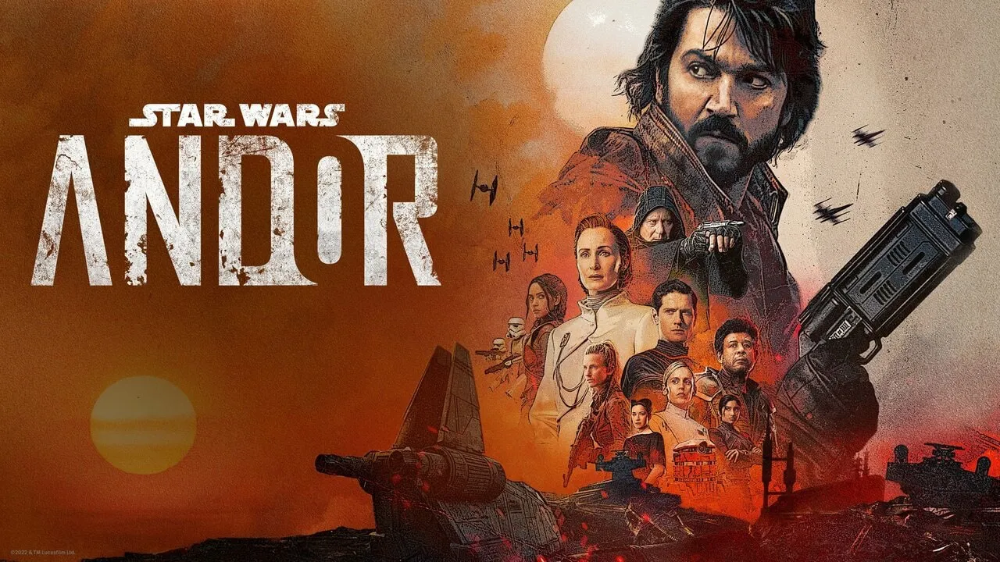

Noticias
Cassian Andor continúa el camino hacia su heróico destino rebelde.
La temporada 2 ya se tranmite solo en Disney+
El REESTRENO del Episodio 3 "La venganza de los Sith" de la saga Skywalker ya está en los cines.Entradas.
Recientemente
Con las nuevas series y peliculas que se van a estrenar la cronología cambiará.
The Acolyte no logró superar las espectativas que esperaba la comunidad.
Sin tener éxito, no continuará la temporada 2.